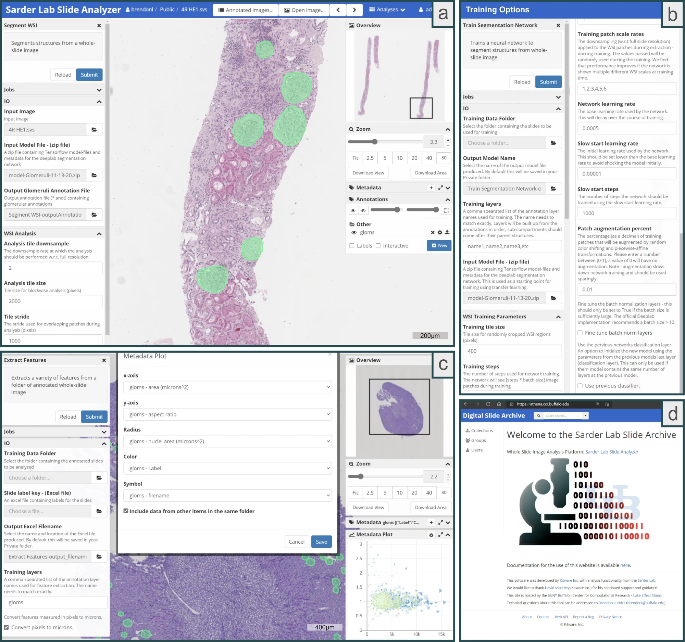

Research Articles
Explore the following articles to learn more about the technology and impact of ComPRePS:

A user-friendly tool for cloud-based whole slide image segmentation with examples from renal histopathology
Histo-Cloud is an open-source, cloud-based tool for easy segmentation and feature extraction from whole slide images (WSIs) using a graphical interface.
ComPRePS: An Automated Cloud-Based Image Analysis Tool
An overview of the ComPRePS tool, detailing its capabilities and applications in digital pathology.